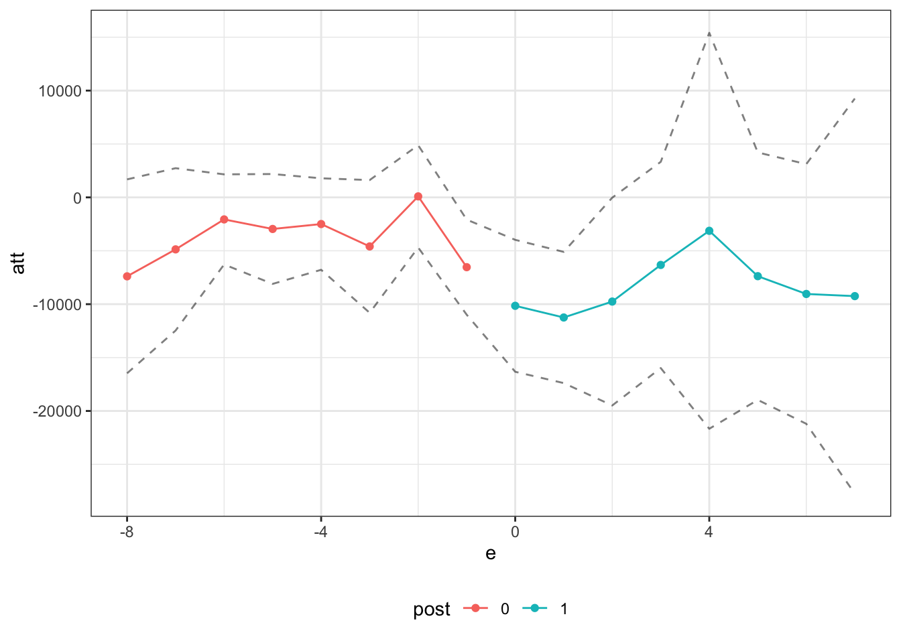
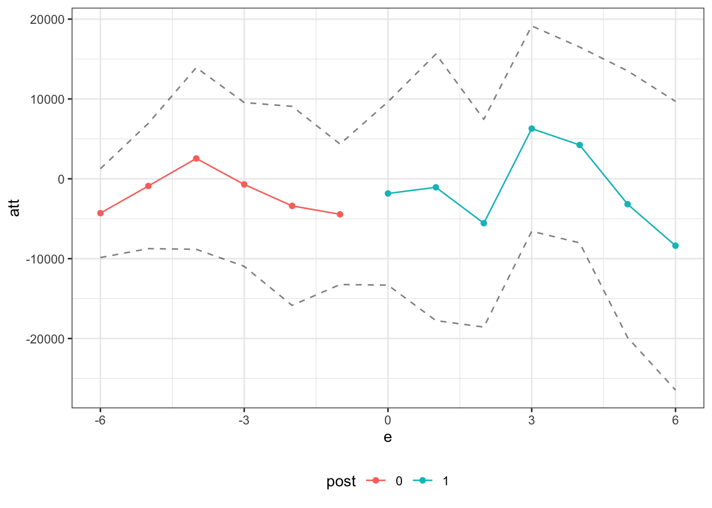

load("job_displacement_data.RData")Exercise 2b Solutions
For this exercise, we will revisit the job displacement example from Exercise 1, but we will try out some alternative identification strategies: (i) change-in-changes, (ii) conditioning on lagged outcomes, and (iii) interactive fixed effects.
To start with, load the data from the file job_displacement_data.RData by running
which will load a data.frame called job_displacement_data. This is what the data looks like
head(job_displacement_data) id year group income female white occ_score
1 7900002 1984 0 31130 1 1 4
2 7900002 1985 0 32200 1 1 3
3 7900002 1986 0 35520 1 1 4
4 7900002 1987 0 43600 1 1 4
5 7900002 1988 0 39900 1 1 4
6 7900002 1990 0 38200 1 1 4You can see that the data contains the following columns:
id- an individual identifieryear- the year for this observationgroup- the year that person lost his/her job.group=0for those that do not lose a job in any period being considered.income- a person’s wage and salary income in this yearfemale- 1 for females, 0 for maleswhite- 1 for white, 0 for non-white
For the results below, we will mainly use the qte, pte, and ife packages. pte and ife in particular are new packages, so we will download the newest versions of these from GitHub. We will also need the BMisc and dplyr packages.
devtools::install_github("bcallaway11/qte")
devtools::install_github("bcallaway11/pte")
devtools::install_github("bcallaway11/ife")
devtools::install_github("bcallaway11/BMisc")
install.packages("dplyr")and then the packages can be loaded by
library(qte) # for change-in-changes
library(pte) # for lagged outcomes
library(ife) # for interactive fixed effects
library(BMisc)
library(dplyr)Below, we will basically try to replicate Question 1 from Exercise 1, but use alternative identification strategies.
Question 1 — change-in-changes
Use the qte package to compute all available group-time average treatment effects, an event study, and an overall average treatment effect. The function that can deal with multiple periods and variation in treatment timing is called cic2. In the results below, I also allow for one year of anticipation based on our discussion in the previous exercise.
Solutions:
set.seed(1234)
cic_res <- cic2(yname="income",
tname="year",
idname="id",
gname="group",
data=job_displacement_data,
cl=4, # inference uses bootstrap, so using 4 cores here for parallel computing
anticipation=1)
# show group-time average treatment effects
cic_res$attgt_results group att time.period se
1 1986 -4845.7935 1985 2788.261
2 1986 -4752.4000 1987 3707.211
3 1986 -6625.1532 1990 3329.790
4 1986 -6403.9360 1992 5292.080
5 1986 -3794.0000 1988 5233.454
6 1986 -6569.0401 1991 6070.181
7 1986 -1834.2997 1993 6096.266
8 1986 -4469.6000 1986 5053.750
9 1987 3761.9200 1992 4656.999
10 1987 -7235.1818 1986 4605.842
11 1987 3402.5364 1985 6715.354
12 1987 2375.2091 1993 8217.196
13 1987 2315.9617 1990 6873.980
14 1987 -2874.9000 1988 7702.620
15 1987 -709.2931 1987 9709.569
16 1987 4009.0909 1991 8141.907
17 1988 12739.4219 1992 4801.800
18 1988 689.6769 1993 3173.847
19 1988 -1698.1369 1990 3541.386
20 1988 4747.9847 1991 4873.551
21 1988 -4678.6154 1987 6448.866
22 1988 -2691.3230 1986 6016.472
23 1988 -8671.0000 1985 14155.204
24 1988 -4931.4462 1988 8604.971
25 1990 -13126.6667 1992 3306.242
26 1990 -2238.6797 1990 2464.740
27 1990 -14135.7833 1993 3096.987
28 1990 4991.8367 1987 3162.331
29 1990 -18937.5000 1991 7088.132
30 1990 -6233.7668 1985 5349.630
31 1990 1225.0000 1988 5605.737
32 1990 5050.5000 1986 6689.689
33 1991 3356.1089 1990 2389.593
34 1991 1885.5127 1993 3351.938
35 1991 6171.4399 1992 2988.742
36 1991 -8032.5000 1991 3907.842
37 1991 -2445.6875 1987 6030.342
38 1991 -6773.8125 1988 8162.698
39 1991 -526.9875 1985 8294.233
40 1991 -1928.6250 1986 10241.518
41 1992 1389.7500 1987 5735.994
42 1992 -10590.0000 1991 3041.388
43 1992 7385.3333 1990 3901.321
44 1992 -7276.1501 1988 2415.282
45 1992 -10431.6506 1985 5669.321
46 1992 -19606.6667 1993 8258.508
47 1992 -19610.8001 1992 7426.475
48 1992 -3480.9600 1986 9611.352
49 1993 -5307.8665 1992 4499.636
50 1993 -7628.3333 1985 3287.463
51 1993 740.1100 1987 2926.097
52 1993 -2749.7637 1990 1922.884
53 1993 1406.0000 1986 4557.711
54 1993 4847.1504 1988 5394.898
55 1993 3312.6003 1991 4767.170
56 1993 -28808.7669 1993 6084.212# recover event study and overall average treatment effect
summary(cic_res)
Overall ATT:
ATT Std. Error [ 95% Conf. Int.]
-6524.985 2311.365 -11055.18 -1994.792 *
Dynamic Effects:
Event Time Estimate Std. Error [95% Pointwise Conf. Band]
-8 -7628.3333 4499.636 -16447.459 1190.792
-7 -4512.8253 3340.806 -11060.686 2035.035
-6 -1033.0500 1642.144 -4251.592 2185.492
-5 -1650.4000 1666.013 -4915.726 1614.926
-4 -100.6308 1883.107 -3791.453 3590.192
-3 -3166.9242 2358.448 -7789.397 1455.549
-2 1694.3396 1554.677 -1352.771 4741.450
-1 -4773.4615 1656.985 -8021.093 -1525.830 *
0 -7332.3463 2277.086 -11795.352 -2869.340 *
1 -7662.0842 2819.617 -13188.431 -2135.737 *
2 -4612.9516 3675.253 -11816.316 2590.412
3 -2289.7228 4012.589 -10154.252 5574.806
4 2829.1073 5429.366 -7812.255 13470.469
5 -1235.6072 4920.490 -10879.591 8408.376
6 -2689.6823 5286.562 -13051.154 7671.789
7 -1834.2997 5053.750 -11739.468 8070.868
---
Signif. codes: `*' confidence band does not cover 0# plot event study
ggpte(cic_res)
Question 2 — lagged outcome
Use the pte package to compute all available group-time average treatment effects, an event study, and an overall average treatment effect. The function pte_default can allow for conditioning on lagged outcomes (it can also allow for a number of other extensions as well — see documentation) In the results below, I also allow for one year of anticipation based on our discussion in the previous exercise.
Solutions:
set.seed(1234)
lo_res <- pte_default(yname="income",
tname="year",
idname="id",
gname="group",
lagged_outcome_cov = TRUE, # this includes lagged outcome
data=job_displacement_data,
anticipation=1)
# show group-time average treatment effects
lo_res$att_gtGroup-Time Average Treatment Effects:
Group Time ATT(g,t) Std. Error [95% Conf. Band]
1986 1985 -5437.7291 2539.687 -11963.2100 1087.7519
1986 1986 -8184.0510 2845.742 -15495.9108 -872.1911 *
1986 1987 -9568.2759 3477.630 -18503.7116 -632.8402 *
1986 1988 -9532.2989 5937.165 -24787.2735 5722.6756
1986 1990 -13180.6460 5858.425 -28233.3041 1872.0120
1986 1991 -13257.0049 5900.434 -28417.6024 1903.5927
1986 1992 -14269.2795 6167.789 -30116.8207 1578.2617
1986 1993 -9245.4677 6282.396 -25387.4792 6896.5438
1987 1985 1192.3065 4694.315 -10869.2835 13253.8965
1987 1986 -9260.7781 4299.861 -20308.8587 1787.3025
1987 1987 -2863.2089 6583.287 -19778.3312 14051.9133
1987 1988 -5588.5495 7180.710 -24038.6937 12861.5948
1987 1990 -1706.6989 6151.739 -17512.9990 14099.6013
1987 1991 -72.4853 6916.690 -17844.2554 17699.2847
1987 1992 -1199.0628 9131.848 -24662.4682 22264.3426
1987 1993 -1918.6063 6994.201 -19889.5327 16052.3201
1988 1985 -8973.0277 3532.817 -18050.2609 104.2056
1988 1986 -5272.6276 3451.823 -14141.7551 3596.4999
1988 1987 -6924.2880 3586.878 -16140.4247 2291.8487
1988 1988 -9252.7374 4054.985 -19671.6320 1166.1571
1988 1990 -7454.3634 6958.487 -25333.5271 10424.8003
1988 1991 -1290.2248 5250.044 -14779.7087 12199.2591
1988 1992 5882.6327 15068.454 -32834.3102 44599.5757
1988 1993 -5823.3262 6939.620 -23654.0121 12007.3596
1990 1985 -7297.1361 2442.898 -13573.9285 -1020.3437 *
1990 1986 1422.4305 2847.899 -5894.9714 8739.8325
1990 1987 3846.0500 2648.511 -2959.0449 10651.1449
1990 1988 493.6461 2853.633 -6838.4886 7825.7808
1990 1990 -3832.7323 10038.474 -29625.6262 21960.1616
1990 1991 -21324.3552 5002.298 -34177.2794 -8471.4311 *
1990 1992 -14880.1044 4554.805 -26583.2375 -3176.9712 *
1990 1993 -16015.5653 5987.320 -31399.4085 -631.7221 *
1991 1985 -2464.0434 2780.923 -9609.3582 4681.2714
1991 1986 -4720.1331 3359.358 -13351.6801 3911.4138
1991 1987 -4554.0573 2316.128 -10505.1254 1397.0109
1991 1988 -10559.0222 4336.586 -21701.4634 583.4191
1991 1990 -3071.6577 4237.070 -13958.4018 7815.0863
1991 1991 -15132.5924 6397.662 -31570.7685 1305.5836
1991 1992 -1169.1505 6231.022 -17179.1613 14840.8602
1991 1993 -6224.2234 8501.978 -28069.2393 15620.7924
1992 1985 -9274.3763 4964.768 -22030.8694 3482.1168
1992 1986 -3329.6311 3453.564 -12203.2323 5543.9701
1992 1987 1269.4440 3896.118 -8741.2575 11280.1454
1992 1988 -7588.5682 3002.123 -15302.2355 125.0991
1992 1990 5822.0112 4000.061 -4455.7597 16099.7821
1992 1991 -10262.8009 6820.974 -27788.6376 7263.0359
1992 1992 -19290.9447 5884.011 -34409.3454 -4172.5441 *
1992 1993 -19094.2022 8298.266 -40415.7996 2227.3952
1993 1985 -7392.7569 3665.678 -16811.3646 2025.8508
1993 1986 -460.2022 2305.565 -6384.1307 5463.7262
1993 1987 -259.0623 3176.464 -8420.6818 7902.5572
1993 1988 3848.0576 1322.586 449.8001 7246.3151 *
1993 1990 -4026.8071 3840.596 -13894.8499 5841.2356
1993 1991 3188.1070 6301.565 -13003.1579 19379.3720
1993 1992 -4324.1541 5063.287 -17333.7831 8685.4749
1993 1993 -27247.1428 4884.852 -39798.3001 -14695.9855 *
---
Signif. codes: `*' confidence band does not cover 0
P-value for pre-test of parallel trends assumption: 0# recover event study and overall average treatment effect
summary(lo_res)
Overall ATT:
ATT Std. Error [ 95% Conf. Int.]
-10471.62 1971.321 -14335.34 -6607.901 *
Dynamic Effects:
Event Time Estimate Std. Error [95% Conf. Band]
-8 -7392.7569 3346.800 -16471.888 1686.3744
-7 -4867.2893 2802.143 -12468.887 2734.3080
-6 -2062.2254 1555.473 -6281.881 2157.4297
-5 -2956.9278 1896.044 -8100.479 2186.6235
-4 -2495.9500 1579.505 -6780.799 1788.8991
-3 -4593.0713 2290.912 -10807.811 1621.6684
-2 94.9099 1765.506 -4694.518 4884.3380
-1 -6534.6649 1641.262 -10987.048 -2082.2818 *
0 -10152.4465 2277.186 -16329.952 -3974.9406 *
1 -11246.3243 2264.317 -17388.919 -5103.7296 *
2 -9755.1302 3586.519 -19484.569 -25.6919 *
3 -6325.9276 3559.751 -15982.750 3330.8950
4 -3129.0463 6833.785 -21667.601 15409.5080
5 -7378.1540 4270.532 -18963.169 4206.8609
6 -9043.9947 4481.832 -21202.219 3114.2301
7 -9245.4677 6820.317 -27747.487 9256.5518
---
Signif. codes: `*' confidence band does not cover 0# plot event study
ggpte(lo_res)
Question 3 — interactive fixed effects
Use the ife package to compute all available group-time average treatment effects, an event study, and an overall average treatment effect. The function that can deal with multiple periods and variation in treatment timing is called staggered_ife2 — this function will use the groups to identify causal effect parameters and does not require us to specify additional instruments. We will allow for one interactive fixed effect, by setting nife=1, but you can try other values. ife does not currently support allowing for anticipation, so we will remove it for these results.
Solutions:
set.seed(1234)
ife_res <- staggered_ife2(yname="income",
tname="year",
idname="id",
gname="group",
data=job_displacement_data,
anticipation=0,
nife=1)
# show group-time average treatment effects
ife_res$att_gtGroup-Time Average Treatment Effects:
Group Time ATT(g,t) Std. Error [95% Conf. Band]
1986 1986 -2185.8205 3548.027 -11217.605 6845.9637
1987 1986 -8584.2103 4317.306 -19574.256 2405.8351
1988 1986 -11155.7720 7269.968 -29662.054 7350.5103
1990 1986 3055.6419 2387.082 -3020.864 9132.1482
1991 1986 -2584.2968 3269.108 -10906.072 5737.4784
1992 1986 -4295.1733 1943.968 -9243.698 653.3518
1986 1987 -511.8414 4455.616 -11853.967 10830.2840
1987 1987 16744.4845 8939.788 -6012.457 39501.4263
1988 1987 -3152.4261 5076.839 -16075.923 9771.0712
1990 1987 1446.0858 4381.904 -9708.399 12600.5707
1991 1987 2043.8396 5818.797 -12768.370 16856.0493
1992 1987 1351.7783 6667.762 -15621.541 18325.0978
1986 1988 -228.2963 9291.832 -23881.394 23424.8013
1987 1988 20819.5901 18274.007 -25698.350 67337.5305
1988 1988 -2912.4569 12536.392 -34824.840 28999.9261
1990 1988 3031.9369 11204.727 -25490.588 31554.4617
1991 1988 -3928.9605 7678.212 -23474.460 15616.5391
1992 1988 2216.2118 17241.149 -41672.505 46104.9289
1986 1990 -5053.8696 7671.814 -24583.082 14475.3423
1987 1990 3895.8557 6055.372 -11518.575 19310.2866
1988 1990 29.7978 6865.788 -17447.612 17507.2079
1990 1990 -6180.2416 17225.613 -50029.412 37668.9289
1991 1990 -524.9309 11388.165 -29514.412 28464.5501
1992 1990 591.5856 13463.892 -33681.822 34864.9937
1986 1991 -11866.8683 7291.637 -30428.312 6694.5754
1987 1991 5756.9310 10013.855 -19734.134 31247.9964
1988 1991 8313.5065 8278.234 -12759.397 29386.4096
1990 1991 -23029.5600 5227.156 -36335.701 -9723.4193 *
1991 1991 -6961.8284 9789.606 -31882.049 17958.3921
1992 1991 -4870.8800 8217.496 -25789.171 16047.4112
1986 1992 -8375.7485 7223.553 -26763.879 10012.3821
1987 1992 8672.0499 10256.302 -17436.184 34780.2839
1988 1992 13674.6668 13087.883 -19641.581 46990.9147
1990 1992 -18280.0333 12195.632 -49324.986 12764.9192
1991 1992 763.0713 4603.006 -10954.247 12480.3896
1992 1992 -17172.7550 5110.529 -30182.013 -4163.4966 *
---
Signif. codes: `*' confidence band does not cover 0
P-value for pre-test of parallel trends assumption: 3e-05# recover event study and overall average treatment effect
summary(ife_res)
Overall ATT:
ATT Std. Error [ 95% Conf. Int.]
-3127.669 2422.695 -7876.065 1620.727
Dynamic Effects:
Event Time Estimate Std. Error [95% Conf. Band]
-6 -4295.1733 2177.581 -9858.743 1268.397
-5 -897.4075 3070.450 -8742.195 6947.381
-4 2550.6035 4452.903 -8826.259 13927.466
-3 -703.9327 4013.686 -10958.624 9550.759
-2 -3390.0735 4877.994 -15853.013 9072.866
-1 -4442.9626 3442.378 -13238.004 4352.078
0 -1836.2150 4493.368 -13316.462 9644.032
1 -1063.3104 6530.672 -17748.729 15622.108
2 -5559.9368 5091.257 -18567.750 7447.876
3 6288.7499 5031.763 -6567.060 19144.559
4 4238.1760 4798.021 -8020.440 16496.792
5 -3177.3260 6535.017 -19873.847 13519.195
6 -8375.7485 7074.927 -26451.702 9700.205
---
Signif. codes: `*' confidence band does not cover 0# plot event study
ggpte(ife_res)
Question 4
What do you make of the results in this excercise relative to each other and relative to the previous results from Exercise 1 that used difference-in-differences?
Solutions:
To me, the results look pretty similar for difference-in-differences, change-in-changes, and unconfoundedness conditional on the lagged outcome. For the event study, in pre-treatment periods, they all deliver non-statistically significant effects in pre-treatment periods (though some of the results still seem fairly large in magnitude; also, if you look at the group-time average treatment effects, then there are some apparent violations of parallel trends in pre-treatment periods) and then indicate a statistically significant drop in income in the two or three years following job displacement. For interactive fixed effects, the estimates themselves in pre-treatment periods seem to be at least as close to 0 as for the other approaches though, in this application, there appears to be sharp price to pay in terms of larger standard errors.